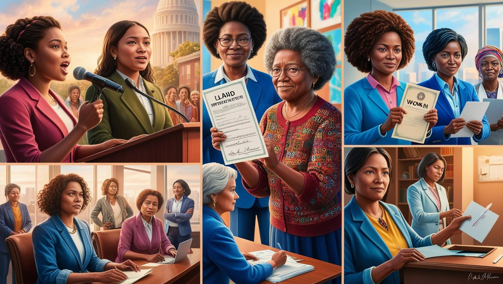

Kadın Hakları Nedir?
Kadın hakları, tüm kadınların sahip olduğu insan haklarıdır. Ancak uygulamada, bu haklar çoğu zaman erkeklerin haklarıyla aynı ölçüde korunmamaktadır. Diğerlerinin yanı sıra, kadın hakları şunları içerir: şiddetten özgür olma ve kendi bedenleri üzerinde seçim yapma gibi fiziksel bütünlük hakları; okula gitmek ve kamusal yaşama katılmak gibi sosyal haklar; mülk sahibi olmak, kendi seçtikleri bir işte çalışmak ve bunun için eşit ücret almak gibi ekonomik haklar; ve kamu görevine oy verme ve kamu görevinde bulunma gibi siyasi haklar.
Bu hakların korunması, kadınların istedikleri hayatları yaşamalarına ve bu hayatlarda başarılı olmalarına olanak tanır.

Kadın Haklarının Temel Unsurları
- Eşitlik: Kadınların erkeklerle eşit haklara sahip olması.
- Eğitim Hakkı: Kadınların eğitim alabilme özgürlüğü
- Çalışma Hakkı: Kadınların istedikleri mesleklerde çalışabilmesi
- Seçme ve Seçilme Hakkı : Kadınların siyasi haklara sahip olması
- Şiddetten Korunma: Kadına yönelik şiddetin önlenmesi ve hukuki koruma sağlanması.